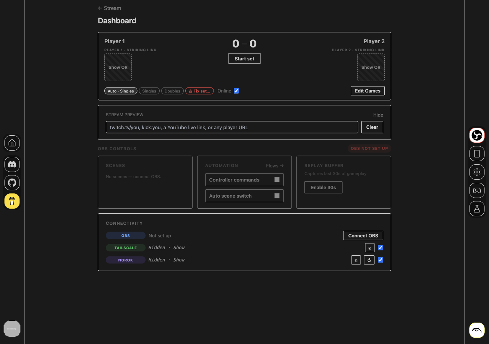
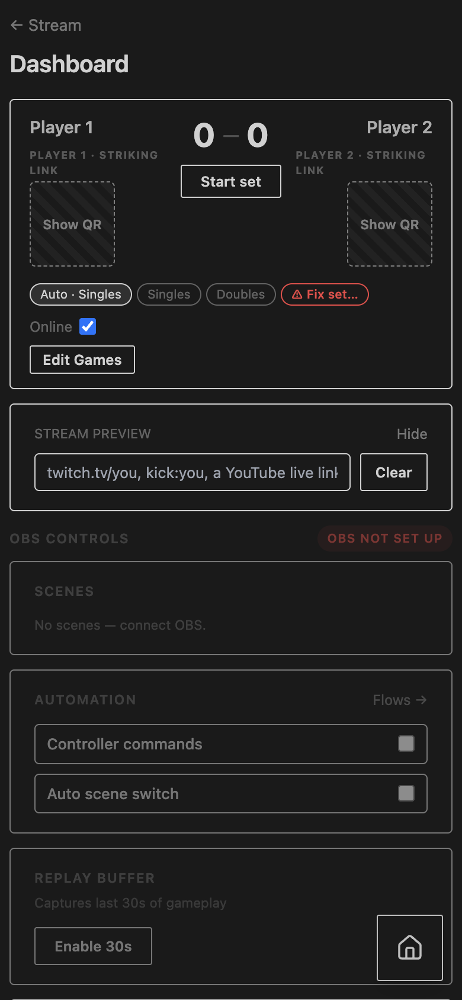
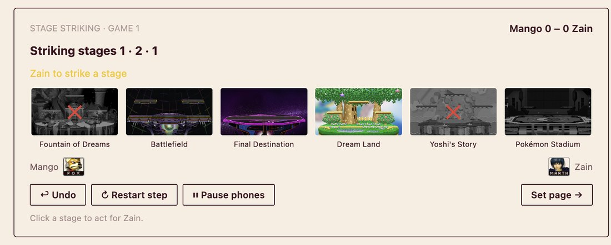

Tournament dashboard
Set score and names, with wins reported from the replays.




You stay in control
The Tournament Dashboard shows the set as it happens. You can act for a player, undo a mistake, restart a step or pause the phones — and fix the score or load earlier games if something went wrong.

And it works from your phone: walk around the venue with the set, your OBS scenes, sources and volume in your hand.

How to set it up
Start a set
- Open Stream → Tournament Dashboard. Pick Singles or Doubles (Auto follows the game being played).
- Click Start Set: the names (empty = the players' Slippi tags), Bo3 or Bo5, and whether players may agree to replay a stage DSR blocks.
- Players scan their QR code. They can type their own name on their phone (✎) — you can still change it on the Dashboard.
Froggi switches your overlay to the Stage Striking scene.
During the set
Results come in by themselves: when a Slippi game with the set's players ends, Froggi counts the winner and the phones move on. Ranked and unranked games never count.
- Top card — the score, the striking-link QR codes and the set's games. Edit Games is the one list of results: Slippi games, games you add by hand (characters, stage, winner, stocks left) or from a replay, delete, reorder, and ✎ change a winner with a note (forfeit, DQ, LRAS by mistake). The score, your overlays and the striking all follow it.
- Stage striking card — who is connected, the strike timeline and the stages; click a stage to act for whoever's turn it is; Undo, Restart step, Pause striking. While a game runs: Report result… (adds the game to the list, prefilled) or Cancel game (doesn't count, play it again). End match ends the set.
- Fix set… — Froggi was closed or Slippi started a new session? Load the set's earlier games from your latest replays; in doubles, fix who is on which colour and port.
A disconnect that starts a new Slippi session with the same players simply continues the set — unless you turn off Continue the set in the next session in Fix set.
Run it from your phone
- Click the phone icon in Froggi's sidebar.
- Use Local on the venue Wi-Fi, or Remote with Tailscale to reach it from anywhere.
- Scan the QR. The first time you control something, your phone asks for the host password (on this PC: Settings → Authorization) and checks it.
Keep the Remote link private — it's your control panel. The player links are the ones you share.